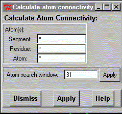

This widget is helpful when one wants to recalculate atom connections (bonds) in case you you have deleted some or if you don't get all hydrogen atoms bonded in your structure.
gOpenMol uses a very simple algorithm to calculate possible bonds. It runs over all the atoms in the structure and uses a window (range) of atoms inside which it thinks the bonded atoms are located. By default there is a range defined (use show atom window command to display the current value) so when gOpenMol looks at atom N it checks range atoms backwards and range atoms forward from atom N to find the bonded neighbours. Some programs place added hydrogens at the end of the file, which might prevent gOpenMol from finding the right bonds.
To solve this problem the range can be redefined. Please supply a new value, inside which you think all bonded atoms will be.
It is also possible to recalculate the connectivity only for a set of atoms.

**************************************************************************